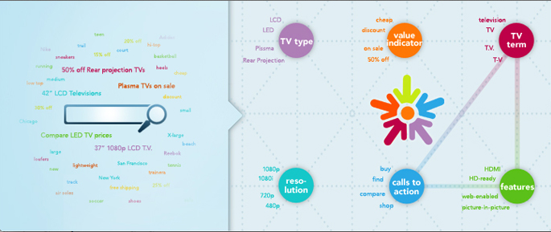
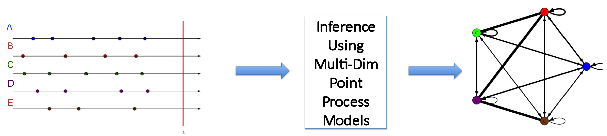

Projects
Relationship Mining for Adchemy IntentMap
|  | Part of IntentMap project which led to $61M Adchemy-Microsoft Partnership |
IntentMap is a graphical structure that captures customers’ intents and used to improve scalability on ad-campaigns. Developed various metrics and algorithms than can
find collocations/relationship strengths among entities,
build and scale an IntentMap from unstructured datasets and structured datasets.
Stock Market App *
Inference on high-frequency data using multi-dim point process models.
Built inference models for order-book data (stock exchanges) to capture causal relationships. Implemented all modules of parameter estimation for point process models in C++. (see my notes on SPIKES)
|  | *Details upon completion in 2012. |
Adcampaign Bid Management
Feature selection and improving statistical learning models for automating bids for keywords (with an objective of improving ROI on Google ad-Campaigns).
Monitered and improved ROI on a test campaign.
Optimal Sensor Selection for small scale systems
Sensor scheduling is a simple problem that begins to address the issues of managing hardware resources in highly energy-constrained devices, placed in dynamic environments.
The controller has to keep switching between a ‘good’ sensor with high usage cost and ‘noisy’ sensor with low cost. Developed a selection algorithm based on ‘sequential information gain’ metric and evaluated its performance.
Optimal Transportation Theory as a solver for Multi-Dim message point communciation.
Fast and Optimal feedback based communication schemes of a multi-dim message point.

For example, the figure shows communicatin of a 2D message point on ![[0,1]^2](eqs/7956306659205054970-130.png) (e.g. (0.8,0.2)).
(e.g. (0.8,0.2)).
Other Projects
Prediction and Learning
Universal Prediction of Individual Sequences. report, slides
Statistical learning Techniques on benchmark data sets report.
Time Series Analysis of benchmark data sets report
Econometric Analysis of cricketer's career. report.
Simulation
Importance Sampling in rare-event simulations for pricing Deep-Out-Of-The-Money Options writeup: html, notes, Java code
Monte Carlo Simulation for Pricing Asian and European Options report.
Valuing American and European options using Binomial model. report
Control & Communication Theory
Applications of Optimal Transportation Theory to Witsenhausen problem and Feedback communications
Brownian Motion and Stochastic Flow Systems report.
Sufficient Statistics and Optimum Control of Stochastic Systems report.
Probability Theory
Gamble's ruin problem html